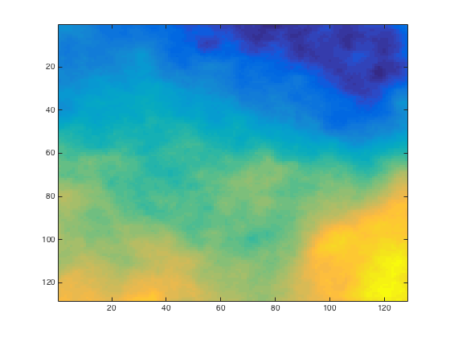
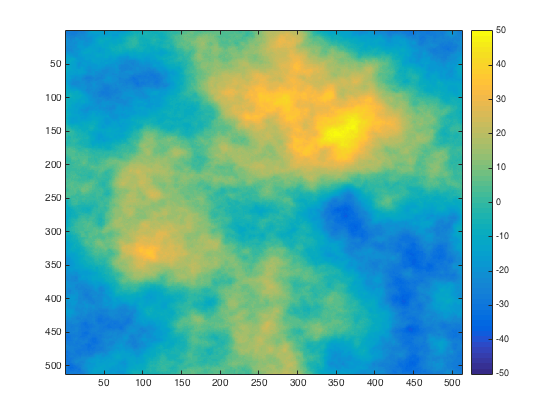
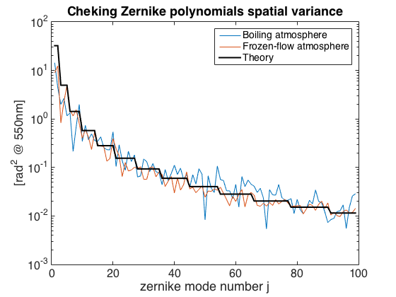
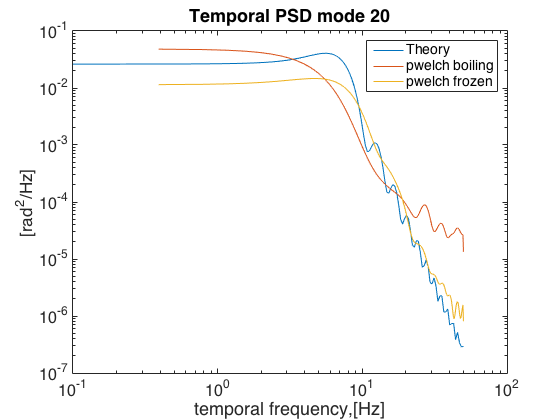

Contents
%This script provides an implementation of the boiling atmosphere model in %Srinath et al, An Efficient Autoregressive Method for Generating Phase %Screens with Frozen Flow and Turbulence in Optical Simulations, Opt Exp %2015 % The spatial and temporal statistics are evaluated and compared to the % default OOMAO implementation of frozen-flow phase-screens % % Spatial statistics are quite close to the theory with frozen atmosphere % converging much faster than boiling atmosphere. The frozen atmosphere % follows quite well the theoretical temporal PSDs from Conan95 whereas the % boiling deviates from those. Although this is expected, the deviations % are rather difficult to explain. TBD develop an analytic modelfor the % temporal PSD of the boiling atmosphere...
INIT
nPixel = 128; % output phaseScreen size D = 4; % physical dimensions of the phaseScrenn in m T = 1/100;% samplingTime in s vx = 100; % windSpeed in x vy = 100; % windSpeed in y alpha = 0.999;% auto-regressive "forgetting" factor u = 1:nPixel;
ATMOSPHERE
3-layer atm = atmosphere(photometry.V,0.15,30,... 'altitude',[0,4,10]*1e3,... 'fractionnalR0',[0.7,0.25,0.05],... 'windSpeed',[5,10,20],... 'windDirection',[0,pi/4,pi]);
%1-layer atm = atmosphere(photometry.V,0.15,30,... 'altitude',[0]*1e3,... 'fractionnalR0',[1],... 'windSpeed',[10*sqrt(2)],... 'windDirection',[pi/4]); % telescope tel = telescope(D,'resolution',nPixel,'samplingTime',T);
@(atmosphere)> Created! @(telescope)> Created! ___ TELESCOPE ___ 4.00m diameter full aperture with 12.57m^2 of light collecting area; the pupil is sampled with 128X128 pixels ----------------------------------------------------
start atmosphere (frozen-flow)
tel = tel + atm;
@(telescope)> Initializing phase screens making parameters:
Layer 1:
-> Computing initial phase screen (D=4.00m,n=128px) ... Done
-> # of elements for the outer maks: 516 and for the inner mask 1008
-> Computing matrix A and B for layer 1: ZZt , ZXt , XXt ... Done
start atmoshere (boiling)
nTimes = 4; N = nTimes*nPixel; L = (N-1)*D/(nPixel-1); [fx,fy] = freqspace(N,'meshgrid'); [~,fr] = cart2pol(fx,fy); fr = fftshift(fr.*(N-1)/L./2); [X,Y] = ndgrid(-N/2:N/2-1); X = X/(nPixel*D); Y = X'; spatialShiftWindPhasor = fftshift(exp(-1i*2*pi*T*(X*vx + Y*vy))); % sqrt(psd) of full phase screen spectrumVK = phaseStats.spectrum(fr,atm); psdRoot = sqrt(spectrumVK); % Phase FT magnitude [idx] = find(fr==0); psdRoot(idx)= 0; fourierSampling = 1./L; WNF = fft2(randn(atm.rngStream,N))./N; % White noise filtering map = psdRoot.*WNF; map = real(ifft2(map).*fourierSampling).*N.^2; imagesc(map(u,u))
ITERATE (JUST FOR VISUALISATION PURPOSES, OTHERWISE SKIP TO NEXT CELL)
spectrum_old is the spectrum from the previous timestep, alpha is the boiling coefficient
WNF = fft2(randn(atm.rngStream,N))./N; % White noise filtering spectrum = psdRoot.*WNF; alpha = 0.99;% auto-regressive "forgetting" factor CLIM = [-50 50]; for kIter = 1:100 WNF = fft2(randn(atm.rngStream,N))./N; % White noise filtering spectrum = alpha*spatialShiftWindPhasor.*spectrum + sqrt(1-alpha^2)*psdRoot.*WNF; map = real(ifft2(spectrum).*fourierSampling).*N.^2; imagesc(map, CLIM), colorbar, drawnow end
CHECK STATS
zern = zernike(2:100,D,'resolution',nPixel); src = source; spectrum = psdRoot.*WNF; alpha = 0.99;% auto-regressive "forgetting" factor CLIM = [-50 50]; for kIter = 1:100 WNF = fft2(randn(atm.rngStream,N))./N; % White noise filtering spectrum = alpha*spatialShiftWindPhasor.*spectrum + sqrt(1-alpha^2)*psdRoot.*WNF; map = real(ifft2(spectrum).*fourierSampling).*N.^2; %imagesc(map, CLIM), colorbar, drawnow ps = map(u,u); zern\ps(:); boiling(:,kIter) = zern.c; +tel; src = src.*tel; zern\src; frozen(:,kIter) = zern.c*2*pi/src.wavelength; kIter end semilogy(var(boiling')) hold on semilogy(var(frozen')) semilogy(zernikeStats.variance(zern, atm, src),'k','linewidth',2) title('Cheking Zernike polynomials spatial variance') ylabel('[rad^2 @ 550nm]') xlabel('zernike mode number j') set(gca,'fontSize',16) legend('Boiling atmosphere','Frozen-flow atmosphere','Theory') % COMMENT: Agreement is quite good withas few as 100 timeSteps. With 1000 % the agreement is quasi-perfect. The stasts converge towards the % theoretical ones
@(zernike polynomials)> Created!
___ ZERNIKE POLYNOMIALS ___
. 99 modes: [ 2 , 100 ]
----------------------------------------------------
@(source)> Created!
___ SOURCE ___
Obj zen[arcsec] azim[deg] height[m] lambda[micron] magnitude
1 0.00 0.00 Inf 0.550 0.00
----------------------------------------------------
@(telescope)> Deleting atmosphere layer slabs!
@(telescope)> Terminated!
@(atmosphere)> Terminated!
@(source)> Terminated!
@(zernike polynomials)> Terminated!
@(source)> Computing the objective wavefront transmitance ...
kIter =
1
kIter =
2
kIter =
3
kIter =
4
kIter =
5
kIter =
6
kIter =
7
kIter =
8
kIter =
9
kIter =
10
kIter =
11
kIter =
12
kIter =
13
kIter =
14
kIter =
15
kIter =
16
kIter =
17
kIter =
18
kIter =
19
kIter =
20
kIter =
21
kIter =
22
kIter =
23
kIter =
24
kIter =
25
kIter =
26
kIter =
27
kIter =
28
kIter =
29
kIter =
30
kIter =
31
kIter =
32
kIter =
33
kIter =
34
kIter =
35
kIter =
36
kIter =
37
kIter =
38
kIter =
39
kIter =
40
kIter =
41
kIter =
42
kIter =
43
kIter =
44
kIter =
45
kIter =
46
kIter =
47
kIter =
48
kIter =
49
kIter =
50
kIter =
51
kIter =
52
kIter =
53
kIter =
54
kIter =
55
kIter =
56
kIter =
57
kIter =
58
kIter =
59
kIter =
60
kIter =
61
kIter =
62
kIter =
63
kIter =
64
kIter =
65
kIter =
66
kIter =
67
kIter =
68
kIter =
69
kIter =
70
kIter =
71
kIter =
72
kIter =
73
kIter =
74
kIter =
75
kIter =
76
kIter =
77
kIter =
78
kIter =
79
kIter =
80
kIter =
81
kIter =
82
kIter =
83
kIter =
84
kIter =
85
kIter =
86
kIter =
87
kIter =
88
kIter =
89
kIter =
90
kIter =
91
kIter =
92
kIter =
93
kIter =
94
kIter =
95
kIter =
96
kIter =
97
kIter =
98
kIter =
99
kIter =
100
 figure(2) clf jMode = 20; nu = logspace(-1,log10(50),200); zern1 = zernike(jMode,D,'resolution',nPixel); [out] = lamTools.multiZernikeTemporalSpectra(nu,atm,zern1,tel); fprintf('Zernike polynomial variance from temporal spectrum:%f, from spatial variance: %f \n', ... trapz(nu,out), zernikeStats.variance(zern1, atm, src)) loglog(nu, out) hold on %[Y,f] = myPSD(boiling(jMode-1,:),1/T,0); %fprintf('Zernike polynomial variance from EMPIRICAL temporal spectrum:%f\n', trapz(f,Y)) [psdj,nuj] = pwelch(boiling(jMode-1,:),[],[],[],T); psdj = psdj*T^2; nuj = nuj*2/T*1/2/T; loglog(nuj, psdj) [psdj,nuj] = pwelch(frozen(jMode-1,:),[],[],[],T); psdj = psdj*T^2; nuj = nuj*2/T*1/2/T; loglog(nuj, psdj) xlabel('temporal frequency,[Hz]') ylabel('[rad^2/Hz]') title(['Temporal PSD mode ' num2str(jMode)]) legend('Theory','pwelch boiling','pwelch frozen') set(gca,'fontSize',16)
@(zernike polynomials)> Created! ___ ZERNIKE POLYNOMIALS ___ . mode: 20 ---------------------------------------------------- @(zernike polynomials)> Terminated! ~~~~~~~~~~~~~~~~~~~ BEWARE OF OOMAO! ~~~~~~~~~~~~~~~~~~~ @(logBook)> Opening the log book! ___ ZERNIKE POLYNOMIALS ___ . mode: 20 ---------------------------------------------------- @(logBook)> Closing the log book! ~~~~~~~~~~~~~~~~~~~ OOMAO'S GONE! ~~~~~~~~~~~~~~~~~~~ Zernike polynomial variance from temporal spectrum:0.278101, from spatial variance: 0.280686